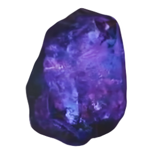
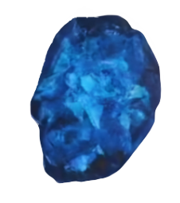
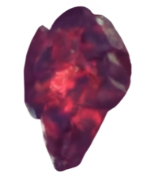
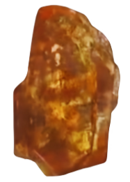
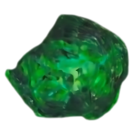
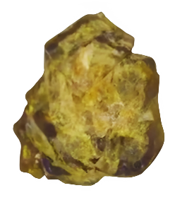

Infinity Stones
"At the dawn of the universe, there was nothing. Then... boom. The Big Bang sent six
elemental crystals hurtling across the virgin universe. These Infinity Stones each
control
an essential aspect of existence."
"Space, Reality, Power, Soul, Mind, and Time."
― Wong and Doctor Strange
"Space, Reality, Power, Soul, Mind, and Time."
― Wong and Doctor Strange
Before creation itself, there were six singularities. Then the universe exploded into
existence, and the remnants of these systems were forged into concentrated ingots...
Infinity Stones."
― Collector
― Collector
Power Stone

"The stone reacts to anything organic. The bigger the target, the bigger the power
surge."
-- Gamora
-- Gamora
The Power Stone was one of the six Infinity Stones, the remnant of a singularity that
predated the universe, representing the element of power. It was used by the Celestial Eson
the Searcher until it was contained within the Orb and hidden for millennia on
a Morag temple.
The Orb containing the Power Stone was coveted by Thanos, who employed the Kree warrior Ronan the Accuser in 2014 to retrieve it for him. However, before Ronan could acquire the Orb, it was stolen by Star-Lord, prompting a galaxy-wide hunt that resulted in the Orb being given to the Nova Corps for safe-keeping. Thanos later retrieved the Power Stone from the Nova Corps in 2018 and inserted it into his Infinity Gauntlet, using it in conjunction with the other five stones to eliminate half of all life in the universe. Following the completion of his life's goal, Thanos destroyed all six stones to prevent his work from being undone.
The Orb containing the Power Stone was coveted by Thanos, who employed the Kree warrior Ronan the Accuser in 2014 to retrieve it for him. However, before Ronan could acquire the Orb, it was stolen by Star-Lord, prompting a galaxy-wide hunt that resulted in the Orb being given to the Nova Corps for safe-keeping. Thanos later retrieved the Power Stone from the Nova Corps in 2018 and inserted it into his Infinity Gauntlet, using it in conjunction with the other five stones to eliminate half of all life in the universe. Following the completion of his life's goal, Thanos destroyed all six stones to prevent his work from being undone.
Space Stone

"A lifetime ago, I too sought the stones. I even held one in my hand."
― Red Skull to Thanos
― Red Skull to Thanos
The Space Stone was one of the six Infinity Stones, the remnant of a singularity that predated
the universe, representing the element of space. Housed within the Tesseract, over the course of
history it was wielded by many individuals, including Johann Schmidt of HYDRA, Mar-Vell of
the Kree Empire, the Skrulls, and Loki of Asgard. During the Infinity War, the Tesseract was
shattered by Thanos, who put the Space Stone inside his Infinity Gauntlet. Following the Snap,
Thanos destroyed the Space Stone, along with the other five Infinity Stones.
Reality Stone

"The Aether. First, it's not a stone; someone called it a stone before. It's more of
a... an angry sludge sort of thing, so someone's gonna need to amend that."
― Thor
― Thor
The Reality Stone was one of the six Infinity Stones, the remnant of a singularity that predated
the universe, representing the element of reality. Liquefied into a dark red fluid called
the Aether, the Dark Elves and their leader Malekith intended to use it to revert the universe
to its state of primordial darkness. In 2013, the Aether was absorbed into Jane Foster,
triggering the Second Dark Elf Conflict. Following their defeat, the Aether was taken by
the Asgardians and entrusted to the Collector.
During the Infinity War, the Aether was retrieved from the Collector's Museum in Knowhere and solidified by the Mad Titan Thanos, who put the Stone inside his Infinity Gauntlet and used it in conjunction with the other five stones to eliminate half of all life in the universe. Following the Snap, Thanos destroyed all six stones to prevent it from being undone.
During the Infinity War, the Aether was retrieved from the Collector's Museum in Knowhere and solidified by the Mad Titan Thanos, who put the Stone inside his Infinity Gauntlet and used it in conjunction with the other five stones to eliminate half of all life in the universe. Following the Snap, Thanos destroyed all six stones to prevent it from being undone.
Soul Stone

"To ensure that whoever possesses it understands its power, the stone demands a
sacrifice."
"Of what?"
"In order to take the stone, you must lose that which you love. A soul... for a soul."
― Red Skull and Thanos
"Of what?"
"In order to take the stone, you must lose that which you love. A soul... for a soul."
― Red Skull and Thanos
The Soul Stone was one of the six Infinity Stones, the remnant of a singularity that predated
the universe, representing the element of soul. Kept on Vormir and under the protection of Red
Skull since 1945, the Soul Stone was acquired by Thanos in 2018 after he sacrificed Gamora,
which he later destroyed after initiating the Snap.
Time Stone

"The temporal singularity discovered by Cagliostro, manipulation and alteration of
timelines."
― Doctor Strange
― Doctor Strange
The Time Stone was one of the six Infinity Stones, the remnant of a singularity that predated
the universe, representing the element of time. It was contained inside the Eye of Agamotto and
placed under the protection of the Masters of the Mystic Arts. In 2017, Doctor Strange took
possession of the Stone and used it to defeat Dormammu.
The following year, during the Infinity War, Doctor Strange relinquished the Stone to Thanos in exchange for sparing Iron Man's life. Thanos then used the Time Stone during the Battle of Wakanda to resurrect Vision after he was killed by Wanda Maximoff, in order to acquire the Mind Stone. Following the Snap, Thanos destroyed the Time Stone, along with the other Infinity Stones to prevent his work being undone.
The following year, during the Infinity War, Doctor Strange relinquished the Stone to Thanos in exchange for sparing Iron Man's life. Thanos then used the Time Stone during the Battle of Wakanda to resurrect Vision after he was killed by Wanda Maximoff, in order to acquire the Mind Stone. Following the Snap, Thanos destroyed the Time Stone, along with the other Infinity Stones to prevent his work being undone.
Mind Stone

"I know it's not of this world, that it powered Loki's staff, gave you your abilities,
but... its true nature is a mystery."
― Vision to Wanda Maximoff
― Vision to Wanda Maximoff
The Mind Stone was one of the six Infinity Stones, the remnant of a singularity that predated
the universe, representing the element of mind. It was previously owned by hanos inside
his Scepter who lent it to Loki for the Chitauri Invasion. With the Battle of New
York concluded, the Scepter was confiscated by HYDRA, whose scientists used it to give
extraordinary powers to the twins Wanda and Pietro Maximoff. Upon the fall of HYDRA, the Scepter
was recovered by the Avengers. It was taken by Ultron and its blue gem casing was shattered,
releasing the stone inside it and placing it on the being that would become Vision.
The stone remained with Vision until it was forcibly removed by Thanos following the Battle of Wakanda killing Vision in the process. It was destroyed along with the other five stones by Thanos after the Infinity War.
The stone remained with Vision until it was forcibly removed by Thanos following the Battle of Wakanda killing Vision in the process. It was destroyed along with the other five stones by Thanos after the Infinity War.
Conclusion
In Avengers: Endgame, the Avengers execute a "Time Heist" to retrieve the Infinity
Stones from past timelines, using them to reverse Thanos's snap. To prevent branching
timelines, Captain America returns each stone to its exact point in time: the Mind Stone
to the scepter in 2012, the Space Stone (Tesseract) to 1970, the Reality Stone (Aether)
to Jane Foster in 2013, the Power Stone to Morag in 2014, the Time Stone to the Ancient
One in 2012, and the Soul Stone to Vormir. This restores balance to the timelines while
leaving the stones destroyed in the present timeline.